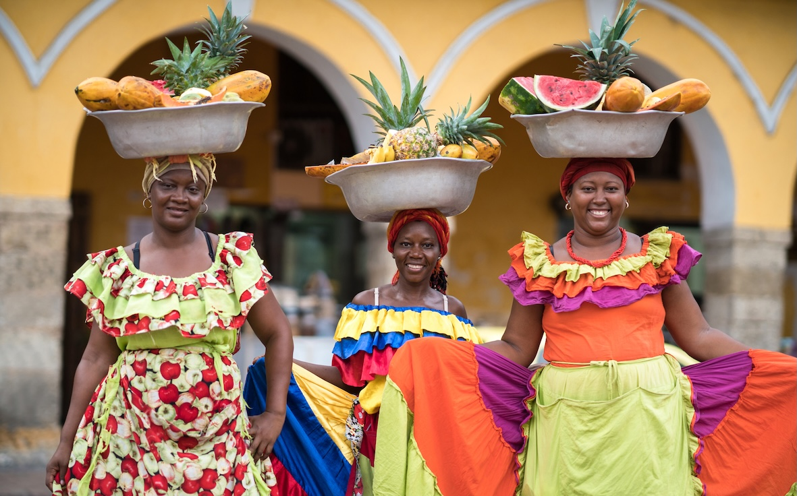

NEW ALBUM
Raíces y Colores (Roots and Colors)
The album is more than music—it’s a celebration of identity, a connection to heritage, and a powerful homage to the women who inspire a nation. Through their songs, Sound of Palenque invites listeners to feel the pulse of Colombia, dance to its rhythms, and embrace its colors.

Raíces y Colores is a vibrant celebration of Colombian culture, featuring lush tropical landscapes, colorful flowers like orchids, and iconic birds such as toucans and hummingbirds. These elements blend with modern artistic touches, symbolizing the fusion of tradition and innovation that defines Sound of Palenque.

TRACK LIST:
- Reina Tropical
- Raíces que Cantan
- Círculo de Fuego
- Luz del Caribe
- Cumbia Astral
- Tambor de Sol
- Son de Orquídea
- Viento Palenquero
- Frutas del Alma
- Caminos de Arena